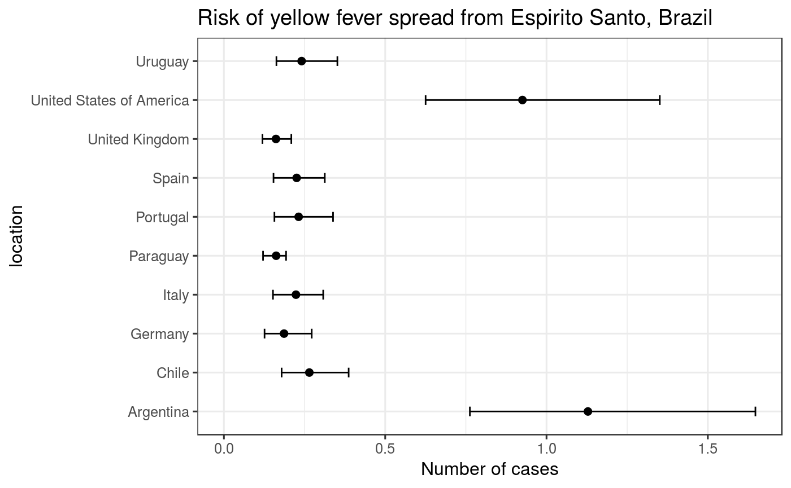

epiflows is a package for predicting and visualising spread of infectious diseases based on flows between geographical locations, e.g., countries. epiflows provides functions for calculating spread estimates, handling flow data, and visualization.
What does it do?
The main features of the package include:
Estimation of risk
-
estimate_risk_spread(): calculate estimates (point estimate and 95% CI) for disease spread from flow data
Example
Estimating the number of new cases flowing to other countries from Espirito Santo, Brazil (Dorigatti et al., 2017).
library("epiflows")## epiflows is loaded with the following global variables in `global_vars()`:
## coordinates, pop_size, duration_stay, first_date, last_date, num_caseslibrary("ggplot2")
data("Brazil_epiflows")
print(Brazil_epiflows)##
## /// Epidemiological Flows //
##
## // class: epiflows, epicontacts
## // 15 locations; 100 flows; directed
## // optional variables: pop_size, duration_stay, num_cases, first_date, last_date
##
## // locations
##
## # A tibble: 15 x 6
## id location_popula… num_cases_time_… first_date_cases last_date_cases
## * <chr> <dbl> <dbl> <fct> <fct>
## 1 Espi… 3973697 2600 2017-01-04 2017-04-30
## 2 Mina… 20997560 4870 2016-12-19 2017-04-20
## 3 Rio … 16635996 170 2017-02-19 2017-05-10
## 4 Sao … 44749699 200 2016-12-17 2017-04-20
## 5 Sout… 86356952 7840 2016-12-17 2017-05-10
## 6 Arge… NA NA <NA> <NA>
## 7 Chile NA NA <NA> <NA>
## 8 Germ… NA NA <NA> <NA>
## 9 Italy NA NA <NA> <NA>
## 10 Para… NA NA <NA> <NA>
## 11 Port… NA NA <NA> <NA>
## 12 Spain NA NA <NA> <NA>
## 13 Unit… NA NA <NA> <NA>
## 14 Unit… NA NA <NA> <NA>
## 15 Urug… NA NA <NA> <NA>
## # ... with 1 more variable: length_of_stay <dbl>
##
## // flows
##
## # A tibble: 100 x 3
## from to n
## <chr> <chr> <dbl>
## 1 Espirito Santo Italy 2828.
## 2 Minas Gerais Italy 15714.
## 3 Rio de Janeiro Italy 8164.
## 4 Sao Paulo Italy 34039.
## 5 Southeast Brazil Italy 76282.
## 6 Espirito Santo Spain 3270.
## 7 Minas Gerais Spain 18176.
## 8 Rio de Janeiro Spain 9443.
## 9 Sao Paulo Spain 39371.
## 10 Southeast Brazil Spain 88231.
## # ... with 90 more rowsset.seed(2018-07-25)
res <- estimate_risk_spread(Brazil_epiflows,
location_code = "Espirito Santo",
r_incubation = function(n) rlnorm(n, 1.46, 0.35),
r_infectious = function(n) rnorm(n, 4.5, 1.5/1.96),
n_sim = 1e5
)## Exportations done## Importations doneres## mean_cases lower_limit_95CI upper_limit_95CI
## Italy 0.2233656 0.1520966 0.3078136
## Spain 0.2255171 0.1537452 0.3126801
## Portugal 0.2317019 0.1565528 0.3383112
## Germany 0.1864162 0.1259548 0.2721890
## United Kingdom 0.1613418 0.1195261 0.2089475
## United States of America 0.9253419 0.6252207 1.3511047
## Argentina 1.1283506 0.7623865 1.6475205
## Chile 0.2648277 0.1789370 0.3866836
## Uruguay 0.2408942 0.1627681 0.3517426
## Paraguay 0.1619724 0.1213114 0.1926966res$location <- rownames(res)
ggplot(res, aes(x = mean_cases, y = location)) +
geom_point(size = 2) +
geom_errorbarh(aes(xmin = lower_limit_95CI, xmax = upper_limit_95CI), height = .25) +
theme_bw(base_size = 12, base_family = "Helvetica") +
ggtitle("Risk of yellow fever spread from Espirito Santo, Brazil") +
xlab("Number of cases") +
xlim(c(0, NA))
Data structure to store flows and metadata
-
epiflows: an S3 class for storing flow data, as well as country metadata. This class contains two data frames containing flows and location metadata based on theepicontactsclass from the epicontacts pacakge. -
make_epiflows(): a constructor forepiflowsfrom either a pair of data frames or inflows and outflows and location data frame. -
add_coordinates(): add latitude/longitude to the location data in anepiflowsobject usingggmap::geocode()
Basic methods
-
x[j = myLocations]: subset anepiflowsobject to location(s) myLocations -
plot(): plot flows from anepiflowsobject on a leaflet world map -
print(): print summary for anepiflowsobject
Global variables
These are variables that estimate_risk_spread() understands from the epiflows object. These represent keys that have values mapping to column names in your locations metadata.
-
global_vars(): view, set, and reset global variables for epiflows -
get_vars(): access variables from the locations metadata -
set_vars(): map variables to columns in the locations metadata
Accessors
-
get_flows(): return flow data -
get_locations(): return metadata for all locations -
get_coordinates(): return coordinates for each location (if provided) -
get_id(): return a vector of location identifiers -
get_n(): return the number of cases per flow -
get_pop_size(): return the population size for each location (if provided)
Resources
Vignettes
An overview and examples of epiflows are provided in the vignettes:
- A Brief Introduction to epiflows:
vignette("introduction", package = "epiflows") - Constructing epiflows objects:
vignette("epiflows-class", package = "epiflows")
Getting help online
Bug reports and feature requests should be posted on github using the issue system. All other questions should be posted on the RECON forum:
http://www.repidemicsconsortium.org/forum/
Contributions are welcome via pull requests.
Please note that this project is released with a Contributor Code of Conduct. By participating in this project you agree to abide by its terms.
References
Dorigatti I, Hamlet A, Aguas R, Cattarino L, Cori A, Donnelly CA, Garske T, Imai N, Ferguson NM. International risk of yellow fever spread from the ongoing outbreak in Brazil, December 2016 to May 2017. Euro Surveill. 2017;22(28):pii=30572. DOI: 10.2807/1560-7917.ES.2017.22.28.30572